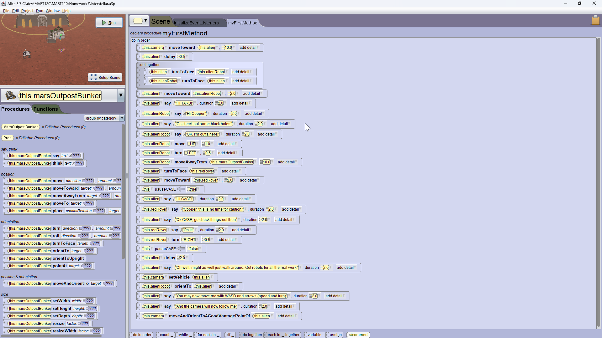

Alice 3 Project |
Alice programming is a lot like scratch in that it is a visual environment and you also snap blocks together. But it works in a 3D space instead of a 2D canvas.
Some of the things I learned during this exercise:
Here is the video. It grow organically. I picked a setting on Mars, and added a few buildings, control center, and models for several items. There's some introductory conversation, demonstrating sequencing of events, and then things are set in motion, and you can move the martian around the surface. And while he moves the camera will follow.
Coding with Alice 3 is done with a visual editor and snapping blocks together. He is an image of the code for this project.

You can get the Alice project to play with this code by clicking on this button.